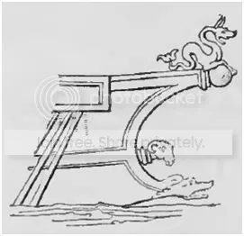
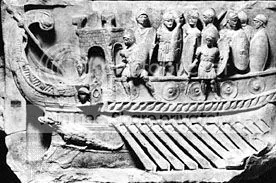
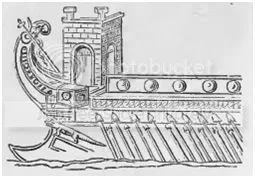
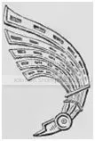
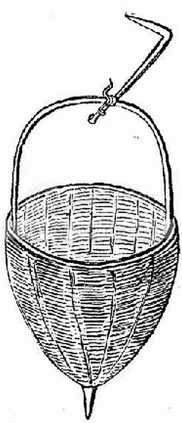
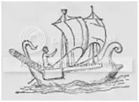

Погрузившись в самокритичное настроение, перечитал ранее написанное. И зацепился за фразу, в которой О.Жаль говорит о поднятой на топ мачты судна корзине для продовольствия (см. Происхождение латинского термина galea. ) Мне показалось, что не мог этот въедливый и пытливый француз просто так привести этот пример. Не иначе, были на то основания. Забросив остальные занятия, стал искать концы – и нашел-таки. Сначала не первоисточник, но вполне серьезное утверждение. В книге «De la milice romaine depuis la fondation de Rome jusqu'à Constantin», написанной современником и соплеменником О.Жаля Clovis Lamarre’ом и изданной в 1863 году, есть такая фраза:
«Транспортные суда не имели особых знаков на носу и на корме. Когда они использовались для перевозки зерна и провизии, просто у них на мачте поднималась корзина, corbis, и поэтому иногда им давали название navis corbita. Попутно мы можем заметить, что, вероятно, именно от слова corbis произошо современное название корабля корвет (corvette).»
Надо пояснить, о чем идет речь. По предположениям морских археологов, первые названия у кораблей появились за полтора тысячелетия до н.э. Это были имена египетских богов, а позднее – имена героев греческих мифов и римских богов. (Хотя, как пишет L.Basch, встречались и такие имена, как “Любимица Амона» у египтян или «Прекрасная незнакомка» - Kallixena, как называлась одна из афинских триер.) Труднее было установить, когда эти названия стали наносить на сам корабль. У.Меррей дает дату около 480 г. до н.э. (Murray, W. M. “A Trireme named Isis: the sgraffito from Nymphaion.” International Journal of Nautical Archaeology 30.2 (2001): 250-256.) Табличка, на которую наносили это название, по-гречески будет πτῠχή. Позднее наносить названия кораблей на носовой части судна стало общим правилом. Шире стал и круг названий. Вот характерный отрывок из «Энеиды» Вергилия (Кн.V, 114-124, перевод С.Ошерова):
Первыми вышли гребцы состязаться на веслах тяжелых;
115 Выбраны были для игр четыре судна огромных;
Юношей пылких собрал Мнесфей на "Ките" быстроходном
(Стал италийцем Мнесфей и рода Меммиев предком);
Вел "Химеру" Гиас - корабль огромный, как город,
С силой гнали его, в три яруса сидя, дарданцы,
120 В три приема они три ряда весел вздымали.
Правил "Кентавром" Сергест - от него получил свое имя
Сергиев дом; а Клоант управлял синегрудою "Сциллой"
(Храбрый Клоант был твоим, Клуенций-римлянин, предком).
Зачастую вырезали фигуру, изображающую бога, или другой объект, послуживший основой для имени корабля. Это изображение называлось по-гречески παράσημον или по латински īnsīgne, и находилось в носу судна, в отличие от фигуры бога-хранителя, tutela, которая размещалась в корме. Здесь, вообще-то, имеются некоторые разночтения. У Дворецкого в Латинском словаре īnsīgne navis переводится как фигура на корабельной корме (что противоречит, например, утверждению Rich'а и других о том, что īnsīgne всегда находится в носу). Чтобы не путаться, мне кажется, лучше для носового изображения использовать термин parasēmon, оставляя слово īnsīgne для других его значений.



Иногда скульптура бога-хранителя находилась непосредственно на палубе судна. Вот цитата из «Сатирикона» Петрония:
«Stante ergo utraque acie, cum appareret futurum non tralaticium bellum, aegre expugnavit gubernator ut caduceatoris more Tryphaena indutias faceret. Data ergo acceptaque ex more patrio fide, protendit ramum oleae a Tutela navigii raptum, atque in colloquium venire ausa.» Petr., Sat., 108.
(«Обе стороны все еще стояли друг против друга, и было очевидно, что бой опять разгорится с новой силой; но тут с большим трудом кормчему удалось убедить Трифену, чтобы она, взяв на себя обязанности парламентера, устроила перемирие. И вот после того как, по обычаю отцов, стороны обменялись клятвами, Трифена, держа перед собою оли
Изображение тутелы могло быть изготовлено из различных материалов, в том числе и таких ценных, как слоновая кость. У Сенеки в «Нравственных письмах» мы находим:
[13] Quae condicio rerum, eadem hominum est: navis bona dicitur non quae pretiosis coloribus picta est nec cui argenteum aut aureum rostrum est nec cuius tutela ebore caelata est nec quae fiscis atque opibus regiis pressa est, sed stabilis et firma et iuncturis aquam excludentibus spissa, ad ferendum incursum maris solida, gubernaculo parens, velox et non sentiens ventum; [Sen., Ep.76]
«С людьми дело обстоит так же, как с вещами. Хорошим называют не тот корабль, который раскрашен драгоценными красками, у которого нос окован золотом или серебром, а бог-покровитель изваян из слоновой кости, и не тот, что глубоко сидит под тяжестью казны и царских богатств, но тот, который устойчив, надежен, сбит так прочно, что швы не пропускают воду, а стенки выдерживают любой натиск волн, послушен рулю, быстроходен и не чувствителен к ветру.» (Перевод С.А.Ошерова).
Помимо парасемона и тутелы на военные корабли наносили и другие украшения. На верхнюю изогнутую часть кормы, которая по-гречески называлась ἄφλαστον и на латинском стала называться aplustre или aplustrum делали из тонких дощечек украшения, напоминающие оперение птиц.

Над этим орнаментом развевался флаг. На флагманском корабле, navis prœtoria, он был красного цвета - velum purpureum. Кроме того, на корме флагмана горел факел, предназначенный для передачи команд подчиненным кораблям.
Все это убранство относилось к военным кораблям. (Война всегда обходилась дорого налогоплательщику). У купеческих и транспортных судов таких архитектурных излишеств не было (надо было обеспечивать рентабельность предприятия). Вот тут самое время вернуться к нашим корзинам.
Некоторая дополнительная работа позволила найти первоисточник, запустивший в будущее легенду о корзине, поднимаемой на мачте транспортного судна.
Письменное свидетельство о существовании судов, на мачту которых поднимали корзину, мы находим у Феста. Секст Помпей Фест (Sextus Pompeius Festus) – римский грамматик II-III в. н.э. Никаких свидетельств о точном времени его жизни и других биографических данных нет. Фест известен тем, что составил сокращенное извлечение из книг другого римского грамматика – Марка Веррия Флакка "О значении слов" (de verhorum significatu). Труд Флакка был громаден по объему. Только на букву Р там было минимум 5 томов. Это была своего рода «Большая Римская энциклопедия». Поэтому Фест отбирал только тот материал, который касался лексикографии. Сочинение Феста, составлявшее первоначально 20 томов, до нас дошло только в одной обгорелой рукописи XI в. Поэтому о работе Феста обычно судят по извлечению из нее, составленному Павлом Дьяконом. Можно теперь представить, насколько цитаты из Феста соответствуют первоисточнику. Тем не менее они приводятся довольно широко. У Феста в изложении Павла мы и находим фразу: «corbitae dicuntur naves onerariae, quod in malo earum summo pro signo corbes solerent suspendi» - «Корбитами называются грузовые суда, на верхушку мачты которых в качестве опознавательного знака обычно вывешивают корзину.» Действительно, существовал такой класс купеческих судов – corbitae (корбиты). И название свое они скорее всего получили именно от слова corbis (корзина). Это была не обычная корзина с плоским дном, а корзина конической или пирамидальной формы, в которую обычно собирали урожай в ту пору. Эти же корзины служили мерой объема сыпучих тел. Выглядели они так:

Фест, а за ним и все последующие римские и средневековые лексикографы, считали, что корбита получила свое название от этой корзины на мачте. На самом деле, скорее всего сам корабль, не имеющий никаких излишеств и служивший только одной цели – погрузке и перевозке продовольствия, в основном зерна, получил свое название от слова corbis, а уже потом стали вывешивать корзину как символ этого названия.( На подводном флоте наших дней знают, как образуются нестандартные, но очень живучие названия кораблей по их внешним признакам: так, подводные лодки 675 проекта в наше время называли «раскладушками» за конструкцию пусковых установок крылатых ракет, а проект 670 вообще назвали «башмак интервента» за характерно задранный нос).
Теперь несколько слов о связи между корзиной, корбитой и корветом.
В русский, английский и ряд других языков слово корвет пришло из французского – corvette – и прямой связи с латинским названием судна corbita не имеет. Нетрудно проследить и историю французского термина. У французов оно появлилось в середине XV века в форме corvot и было заимствовано у голландцев, которые в то время имели промысловые суда, носившие название corver, а в последующем corbette. Их название произошло от голландского corf – корзина, но не потому, что ее вывешивали на мачте, а потому, что от названия корзины произошло имя рыболовецкого невода, которым и пользовались для своего промысла голландские рыбаки.
Так что, к общему разочарованию, вывешенная на мачту корзина к современным красавцам-корветам отношения не имеет, как, скорее всего, нет и прямой связи этого термина с латинским corbita, хотя противное утверждается в «Военно-морском словаре» (1990 г.)
В заключение – несколько слов о корвете из Станюковича («Вокруг света на «Коршуне»»):
«Это было небольшое, стройное и изящное судно 240 футов длины и 35 футов ширины в своей середине, с машиною в 450 сил, с красивыми линиями круглой, подбористой кормы и острого водореза и с тремя высокими, чуть-чуть наклоненными назад мачтами, из которых две передние – фок- и грот-мачта – были с реями и могли носить громадную парусность, а задняя – бизань-мачта – была, как выражаются моряки, «голая», то есть без рей, и на ней могли ставить только косые паруса. Десять орудий, по пяти на каждом борту, большое бомбическое орудие на носу и две медные пушки на корме представляли боевую силу корвета. На нем уходила в плавание горсточка моряков, составлявших его экипаж: капитан, его помощник – старший офицер, двенадцать офицеров, восемь гардемаринов и штурманских кондукторов, врач, священник, кадет Володя и 130 нижних чинов – всего 155 человек.»
Приятно все-таки вернуться к настоящему русскому языку после всех корявых изысков.